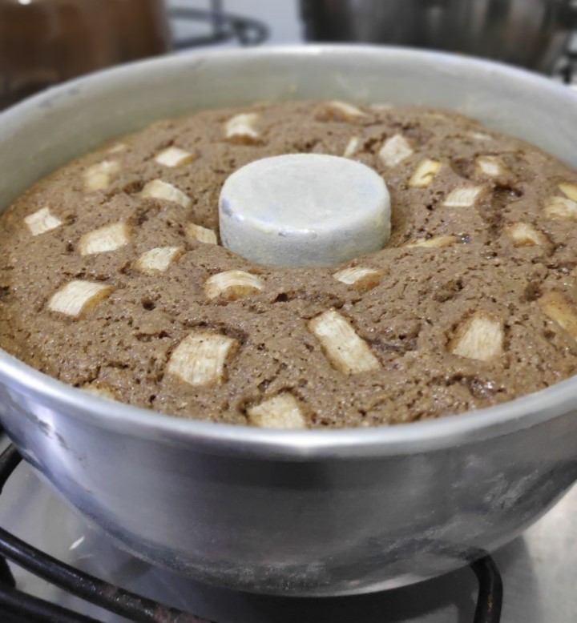
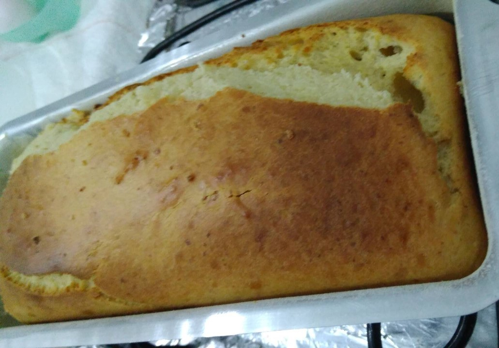
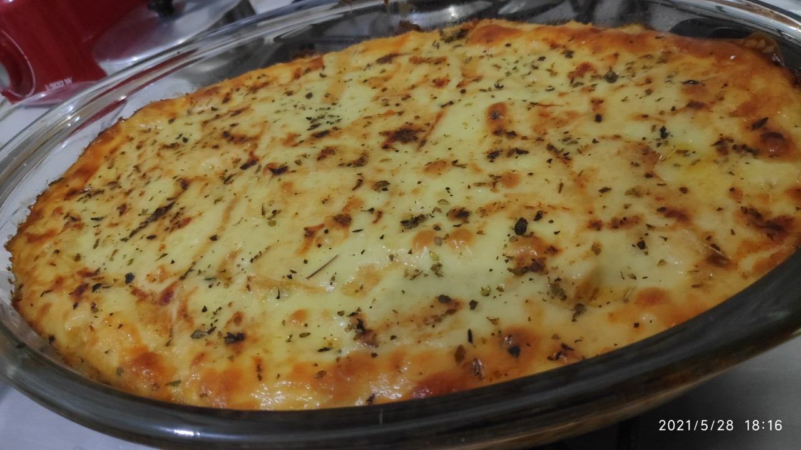
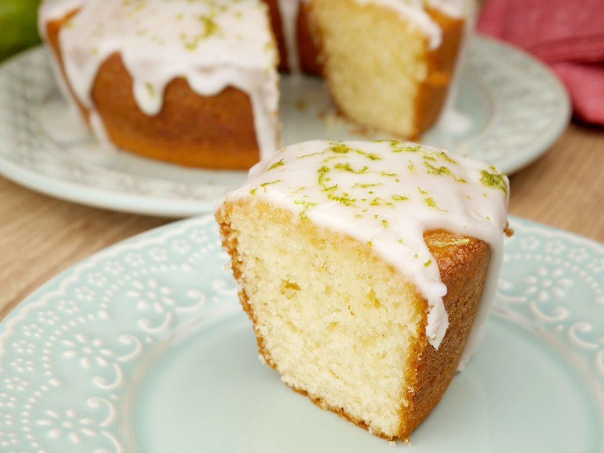
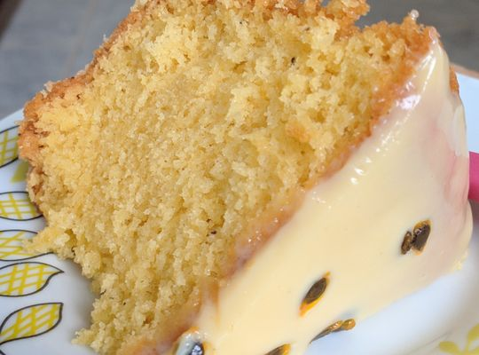
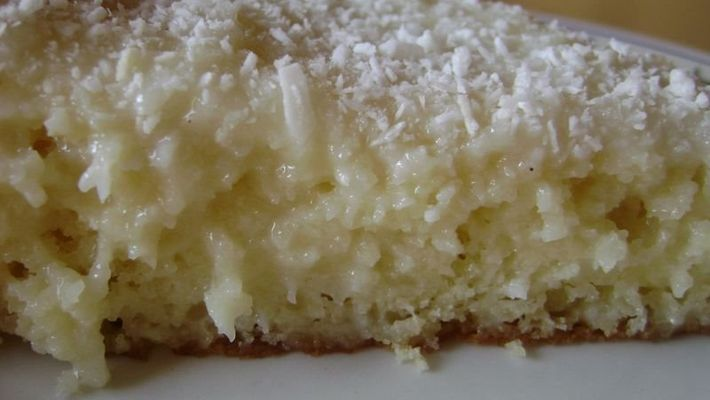

Olá, sejam bem-vindos(as)! Este site foi uma criação minha para guardar minhas receitas favoritas, como uma forma de manter registrado, compartilhar e facilitar o acesso à receitas que eu já testei e aprovei.
Este site foi feito com parte do curso de programação "Eu ProgAmo" oferecido pela PrograMaria quem tem como objetivo incentivar as mulheres a iniciar no universo da programação.
Bolo de Banana ou Maçã Fit

Ingredientes:
1 Xícara de aveia em flocos finos
1 Xícara de flocão de arroz
1 Xícara e meia de açúcar mascavo (eu coloco até menos)
1/2 Xícara de óleo (eu coloco um pouco menos)
1/2 Xícara de leite de coco (eu coloco um pouco mais)
3 Ovos inteiros
3 Bananas ou 2 Maçãs
1 Colher de sopa de fermento
1 Colher de sopa de canela em pó
1 Pitada de sal
Modo de preparo:
Bata no liquidificador: a aveia, o leite, o óleo, o açúcar, 1 banana (ou as cascas da maçã), os ovos.
Numa vasilha grande misture o flocão, a canela e o fermento.
Junte na vasilha o conteúdo do liquidificador e misture com colher de pau. Depois de pôr numa fôrma untada põe as outras bananas (ou maçãs) picadas.
Assa em fogo médio por 30 a 40 minutos.
Ps: Fica legal tb pôr uma cobertura com uma farofa de açúcar com canela. Fica uma crostinha deliciosa!
Pão caseiro

Ingredientes:
1 Xícara e 1/4 de leite morno
1/2 Xícara de óleo
2 ovos
2 tabletes de fermento para pão ou um sachê de fermento biológico seco
4 Xícaras de farinha de trigo
1 colher de chá de sal
1/4 Xícara de açúcar
Um pacote de 50g de queijo ralado (eu ponho um pouco menos)
Modo de preparo:
Bata no liquidificador: o leite, o óleo, os ovos e os tabletes de fermento, reserve.
Em uma vasilha, misture a farinha, o sal, o queijo e o açúcar e despeje sobre mistura do liquidificador.
Bata até borbulhar e deixe crescer por 20-40 minutos (Em algum lugar sem corrente de vento.
Despeje a massa em uma forma untada e polvilhada e leve para assar em forno médio-alto (220° C), preaquecido, por 30 minutos.
Fricassê de frango

Ingredientes:
1 Caixa de creme de leite
1 Copo de requeijão
1 e 1/2 Xícara de leite
2 Colheres de sopa de amido de milho
1 lata de milho
Sal á gosto
Manteiga
1 Kg de frango desfiado
2 Colheres de extrato ou molho de tomate
2 Dentes de alho
1 Cebola picada
Cheiro picado verde á gosto (Salsa (principalmente), Hortelã, Coentro e Oregano)
300g de queijo mussarela
Modo de preparo:
Bata no liquidificador: o creme de leite, o requeijão, o leite, o amido de milho, a lata de milho e o sal
Em uma panela doure na manteiga a cebola, os alhos e adcione o cheiro verde picado e o frango desfiado e deixe cozinhar um pouco
Adcione o liquido á panela e mexa até borbulhar e engrossar
Despeje num refratário de vidro metade do refogado, cubra com parte do queijo, despeje a outra metade e cubra com o resto do queijo.
Leve para assar no forno á 220º até gratinar o queijo.
Ps: Você pode polvilhar orégano em cima do fricassê antes de ir ao forno, e espalhar batata palha por cima após retirar do forno.
Bolo de limão

Ingredientes:
2 Ovos (claras em neve)
1 e 1/2 Xícara de açucar
3 Colheres (sopa) manteiga
suco de 1 ou 2 limões (depende do tamanho)
Raspas casca limão
3 xícaras de farinha de trigo
1 xícara de leite
2 colheres (sopa) fermento em pó
Modo de preparo:
Bata no liquidificador as gemas, o açúcar e margarina.
Em seguida junte o suco e raspas limão, o leite e farinha aos poucos.
Por último misturar, delicadamente, as claras em neve e o fermento.
Espalhar a massa em uma assadeira retangular média já untada e assar no forno (já preaquecido) por mais ou menos 40 minutos em temperatura de 180ºC.
Ps: Você pode fazer uma cobertura com leite condensado, sumo de 1 ou 2 limões para colocar em cima do bolo, e polvilhar o topo do bolo com raspas de limão
Bolo de Maracujá

Ingredientes:
3 Ovos
1/2 Xícara de óleo
1 e 1/2 Xícara de açúcar
3 Xícaras de farinha de trigo
1 Xícara de suco de maracujá (bem forte)
1 Colher de sopa de fermento em pó
1 pitada de sal
Modo de preparo:
Bata bastante na batedeira os ovos, açúcar e o óleo.
Acrescente a farinha e o suco do maracujá.
Bata novamente até misturar bem.
Depois acrescente o fermento em pó e bata só para misturar.
Coloque em forma untada com margarina e farinha.
Leve ao forno médio, pré-aquecido, por cerca de 40 minutos, ou até dourar.
Strogonoff de frango
Ingredientes:
3 peitos de frango
1 Lata de creme de leite
3 Colheres de sopa de ketchup
Sal e pimenta-do-reino a gosto (Ou tempero completo)
2 Colheres de sopa de amido de milho
2 Colheres de mostarda
1 cebola pequena picada
1 dente de alho picado
Manteiga
Modo de preparo:
Corte o peito de frango em cubos pequenos.
Tempere os cubos com sal e pimenta a gosto (ou tempero completo).
Deixe a panela aquecendo com a manteiga e logo em seguida doure a cebola e o alho.
Acrescente os cubos dentro da panela e deixe cozinhando/dourando.
Quando dourar, adicione o ketchup, a mostarda e mexa.
Adcione o creme de leite e misture tudo antes de ferver.
Sirva com arroz e batata palha.
Ps: Se você gostar, você pode adicionar um copo de cogumelos á receita, junto do ketchup e mostarda.
Bolo de coco molhado

Ingredientes do bolo:
1 Xícaras de chá de açucar
3 Xícaras de chá de farinha de trigo
4 Ovos
3/4 de Xícara de leite de coco
3 colheres de coco ralado
Sal á gosto
1 e meia colher de sopa de fermento em pó
3 colheres de óleo de coco
Ingredientes da calda:
1 Lata de leite condensado
1 Vidro de leite de coco
1 Xícara de coco ralado
Modo de preparo:
Bata no liquidificador os ovos, o leite, a margarina, o açúcar e o coco.
Coloque o trigo em uma vasilha, despeje a massa batida e misture até que fique homogêneo
Adicione o coco e misture.
Por último, acrescente o fermento e misture delicadamente.
Coloque em forma untada e enfarinhada e leve ao forno pré aquecido para assar á 180º por cerca de 40 minutos ou até dourar.
Misture tudo os ingredientes da cobertura (não precisa levar ao fogo), coloque sobre o bolo ainda quente e polvilhe coco ralado.
Leve para gelar!
Conheça outros sites de receitas:
Quer me sugerir alguma receita para adicionar ao meu site? Deixe seu contato: